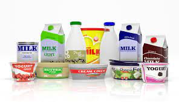
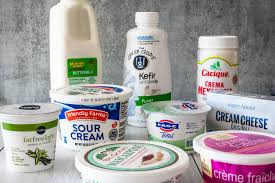
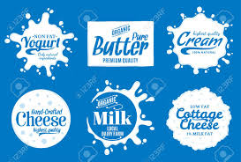

DAIRY
YORGHUT

The range of milk products varies significantly from region to region and among countries in the same region,
depending on dietary habits, the milk processing technologies available, market demand, and social and cultural circumstances.
The per capita consumption of milk and milk products is higher in developed countries, but the gap with many developing countries is narrowing.
Demand for milk and milk products in developing countries is growing with rising incomes, population growth, urbanization and changes in diets
2. Iccy creams

The per capita consumption of milk and milk products is higher in developed countries, but the gap with many developing countries is narrowing.
Demand for milk and milk products in developing countries is growing with rising incomes, population growth, urbanization and changes in diets
The range of milk products varies significantly from region to region and among countries in the same region,
depending on dietary habits, the milk processing technologies available, market demand, and social and cultural circumstances.
3.BUTTER

we visit sydney's markets many times aweek and hand select the best fruit and veggies for our customers to ensure we deliver the freshest and juiciest produce.
we know our customers really do value fresh and nourishing wholesome butter every day.
4. MILK

We have large farms over 500hecs that are filled with health cows. we ranch all animals for abetter produce
The rate of milk products varies significantly from region to region and among countries in the same region,
depending on dietary habits, the milk processing technologies available, market demand, and social and cultural circumstances.
5. Meat
Large farms over 500hecs that are filled with health cows. we ranch all animals for abetter produce
The rate of milk products varies significantly from region to region and among countries in the same region,
depending on dietary habits, the milk processing technologies available, market demand, and social and cultural circumstances.
6. CHEESE
The per capita consumption of milk and milk products is higher in developed countries, but the gap with many developing countries is narrowing.
Demand for milk and milk products in developing countries is growing with rising incomes, population growth, urbanization and changes in diets
The range of milk products varies significantly from region to region and among countries in the same region,
depending on dietary habits, the milk processing technologies available, market demand, and social and cultural circumstances.